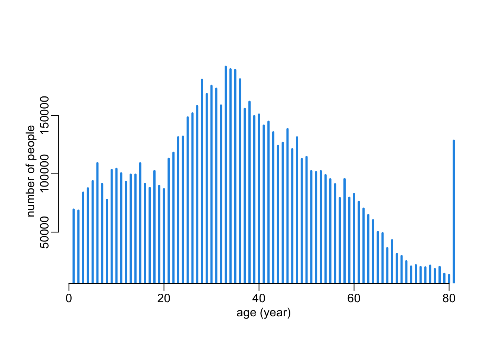
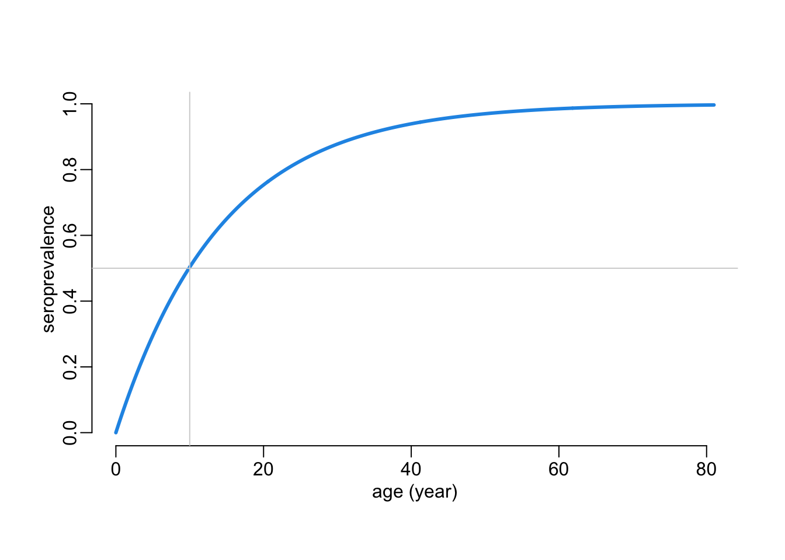
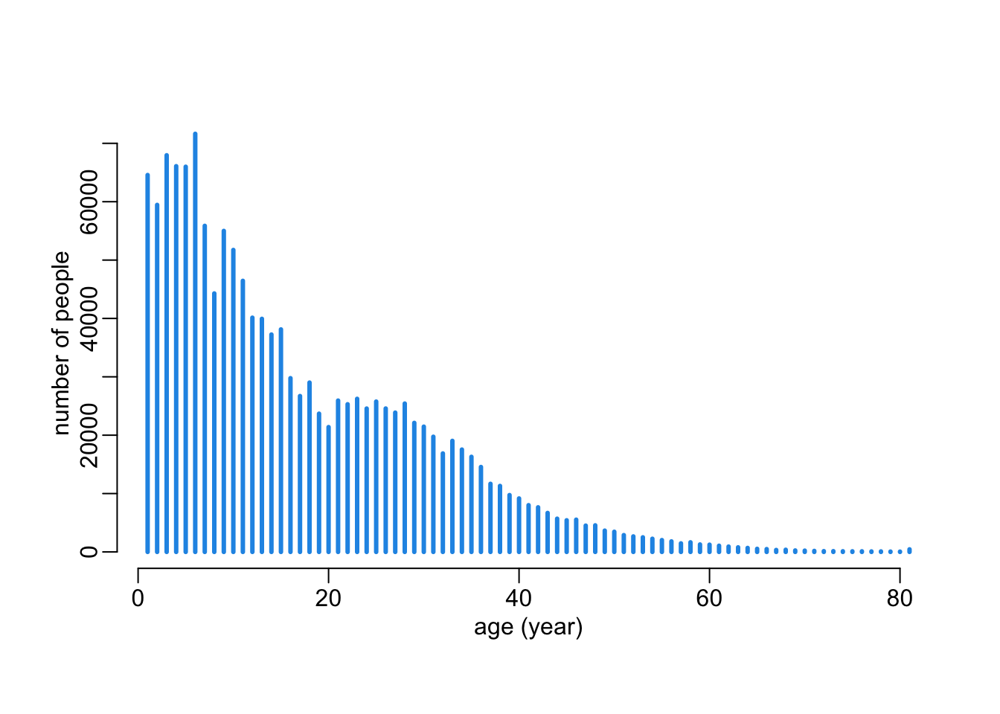
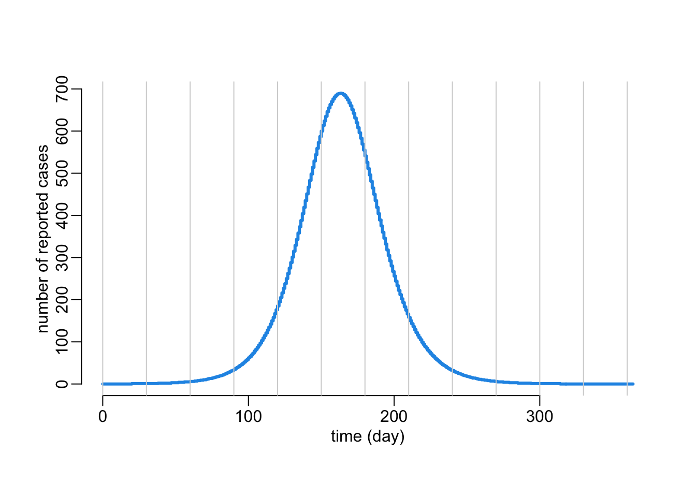
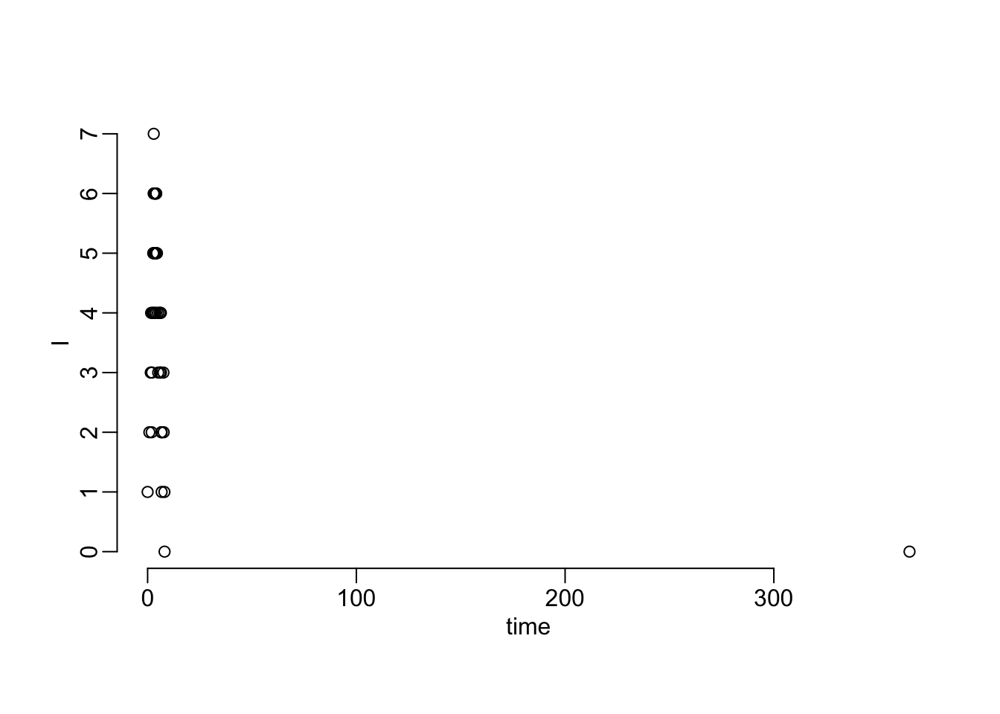

library(dplyr)
library(stringr)Timeliness and accuracy tradeoff
Packages and utilitary functions
Packages:
Utilitary functions:
plot2 <- function(...) plot(..., col = 4, lwd = 3)
plot_age <- function(...) plot2(..., xlab = "age (year)")Demographic data
Loading the 2019 census data:
census <- readRDS("~/OneDrive - Oxford University Clinical Research Unit/data/census VNM 2019/census2019.rds")A function that computes age as an integer:
convert_age <- function(x) {
x |>
str_remove(" tuổi") |>
str_remove(" \\+") |>
as.integer()
}Creating the data for HCMC:
hcmc <- census |>
filter(province == "Thành phố Hồ Chí Minh") |>
mutate_at("age", convert_age) |>
group_by(age) |>
summarise(n = sum(n))Looking at the age distribution in HCMC:
with(hcmc, plot_age(age, n, type = "h", ylab = "number of people"))
Age profile of seroprevalence in HCMC:
xs <- seq(0, 81, le = 500)
ys <- 1 - exp(-.07 * xs)
plot_age(xs, ys, type = "l", ylab = "seroprevalence")
abline(h = .5, col = "lightgrey")
abline(v = 10, col = "lightgrey")
Computing the number of susceptibles per age class in HCMC:
hcmc <- mutate(hcmc, susc = exp(-.07 * row_number()) * n)Looking at the age profile of seroprevalence in HCMC:
with(hcmc, plot_age(age, susc, type = "h", ylab = "number of people"))
The total number of susceptibles in HCMC:
hcmc |>
pull(susc) |>
sum()[1] 1408015A deterministic model
An SIR model:
sir_det <- function(beta, gamma, S0, I0, R0, times) {
N <- S0 + I0 + R0
sir_equations <- function(time, variables, parameters) {
with(as.list(c(variables, parameters)), {
I <- N - S - R
dS <- -beta * I * S / N
dR <- gamma * I
return(list(c(dS, dR)))
})
}
tibble::as_tibble(
as.data.frame(
deSolve::ode(c(S = S0, R = R0), times, sir_equations,
c(beta = beta, gamma = gamma))))
}A function that computes incidence:
add_incidence <- function(df, p = 1 / 5) {
df |>
mutate(incidence = round(-c(diff(S), NA)),
reported = round(p * incidence)) |>
filter(row_number() < n())
}Simulating an epi-curve in HCMC (with an R\(_0\) of 7.25):
tmax <- 365
out <- sir_det(beta = 5, gamma = 1 / 1.45, S0 = 1.5e6, I0 = 1, R0 = 8.5e6, times = seq(0, tmax)) |>
add_incidence()
with(out, plot2(time, reported, type = "s",
xlab = "time (day)", ylab = "number of reported cases"))
abline(v = seq(0, tmax, 30), col = "lightgrey")
The total number of reported cases during the outbreak:
out |>
pull(reported) |>
sum()[1] 46934A stochastic model
sir_sto <- function(beta, gamma, S0, I0, R0, tf, ...) {
transitions <- list(c(S = -1, I = +1),
c(I = -1, R = +1))
lvrates <- function(x, params, t) {
with(c(x, params), c(beta * S * I / (S + I + R),
gamma * I))
}
tibble::as_tibble(
as.data.frame(
adaptivetau::ssa.adaptivetau(c(S = S0, I = I0, R = R0), transitions, lvrates,
list(beta = beta, gamma = gamma), tf, ...)
)
)
}sir_sto(beta = 5, gamma = 1 / 1.45, S0 = 1.5e6, I0 = 1, R0 = 8.5e6, tf = 365) |>
with(plot(time, I))